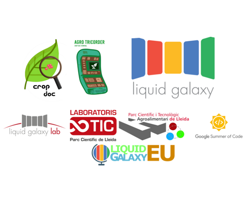

ABOUT CROPDOC
CropDoc is an application designed to help organizations and agriculture professionals to detect and diagnose potential diseases present on their crops.
It has been developed by Guillem Felis at the Liquid Galaxy Lab in Lleida, Spain, as part of the Google Summer of Code 2021 program.
DIAGNOSE
At the moment, CropDoc is able to diagnose the presence of rust, scab, powdery mildew and the frog eye leaf spot fungus in apple leaves. Head to the section "Diagnose" to test this functionality.
This functionality is specially designed for the AgroTricorder, an edge device developed for this project which is able to take images and process them at a high speed, ideally distributed across organizations in the future.
Species implemented: Malus domestica leaves, known as common apple leaves.
Diseases implemented for apple leaves: rust, scab, powdery mildew, frog eye leaf spot.
LIQUID GALAXY
Using the liquid galaxy technology, the following demo demonstrates the visualization capabilities of such technology for this project.